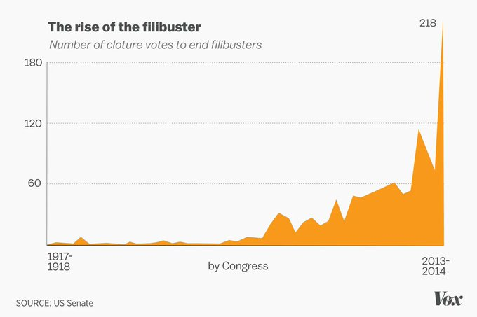
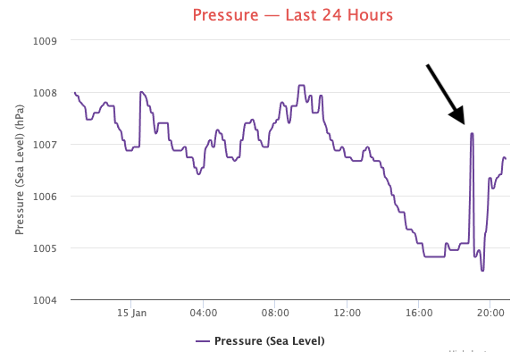

Week 3
Such colorful speeches though.. I'd be impressed if the speechmakers weren't so full of shit.
By its foundation the check on power in US was achieved by having seperate branches balancing eachother, not requiring supermajority within each branch. Appeals to history, customs in this regard have no basis. SCOTUS works on simple majority. The House passes laws same way. President is the singular decision maker within his branch (not even a minority there). The founders could surely arrange some stuff to require supermajorities within each branch if they thought that was important. But they didn't.
Simple majority should matter. It already does for pres elections for instance. An handful more votes in a single key state can make one President.
If it's good for one branch of gov, why not for another?
Vox: "The filibuster has been around, in some version or another, since the mid-1800s. But it's never been used as constantly as it is today...

'We have added a new veto point in American politics,' Gregory Koger, the author of "Filibustering: A Political History of Obstruction in the House and Senate," says. 'It used to be the House, the Senate, and the President, and now it’s the House, the President, the Senate majority, and the Senate minority.'"
Hey it could be heating pipes, they make weird ass sounds.
"Havana Syndrome Unlikely Caused by U.S. Foes, CIA Says"
Oz state WA is still on zero covid strategy? Tough task w Omicron.
No Bitcoin fund for Buttafuoco
"@samjsutton
As Bitcoin's energy footprint grows, Democrats are raising climate change and grid concerns in their attempts to rein in digital assets.. Scrutiny from lawmakers is triggering lobbying on behalf of crypto miners who are using an escalating amount of computing and electricity to extract valuable digital tokens from the blockchain.
'It is time for Congress and federal regulators to step up and address the serious risks that crypto poses to our economy and our environment,' @SenWarren said in a statement to Politico"
BT - Tripping The Light Fantastic #music
When you say "it's fake" they get upset bcz it sounds like u r calling all of the physical exertion involed as fake. That's clearly not the case. The acts are physical, ppl can get hurt, it just ain't combat, or even sparring in a competitive way.. It's like shadow boxing, with two people.
I guess it is, the way figure iceskating, gymnastics is a sport.. There is the aesthetics part, there is the sports part.. It just isn't a one-on-one competition of course (the winners are known beforehand, no?). No wonder a few of its practitioners made it in Holywood.. Ventura, Dwayne J, Cena...
American wrestling? Is that a sport? :)
The Novax incident happened while Australia was (is) trying to open up. The curt denial probably helped to look tough on virus while still continuing to open - could have been done partly for that reason. Novax will be fine.. At that level of fame whether they like it or not, they are part of politics. Plus we are talking about f-ing tennis, it's not like it is football. Who cares? My third least favorite sport (first being golf).
#escelator #uk
If 95% of the human population is killed off, only then lithium batteries wld be enough for world's energy needs..
Well.. Maybe that was the plan with this virus thing eh?
Bruce Cockburn - States I'm In #music
Robert Plant & Alison Krauss - Can't Let Go #music
J. Oliver on #unions. Oliver surely has some shitlibs in his audience, but still, I argue a Brit has more in-your-bones appreciation for this stuff than a regular American can ever have.
Batteries are too heavy, the train would not move (or catch fire and blow up)
As it stands CA railway project is a disaster, will have eaten up over $100 billion, and as of now it hasn't transported a single passenger.
Buying up land in the path of the project apparently caused some delays, but overall mismanagement was worse, and the choice of going electric is a major part of that / its symptom. It points to a pervasive foolishness when it comes to deciding on green tech. Store green fuel in one car of the train, enough to propel the whole train for an entire SF/LA trip. No need for electrified lines, simpler design.
🤦♂️ 🤦♂️ 🤦♂️
AP [2021]: "At the center of the latest [CA high-speed rail construction] dispute is how soon to electrify the line, which rail officials say is a necessity to make the train high speed — the whole idea of the project that voters were sold on. They want to enter into a contract next year for a firm to design and construct an electrified track and system and to maintain it for 30 years, effectively locking in the state for the long haul"
An anti-corrosive substance was not added to the water, the lead in pipes corroded. They switched back to better source of water in 2015. It was a perfect storm; dirty water, faulty water treatment, lead in pipes (which is not uncommon btw).
The main culprit was running out of money, and switching to dirty water source.
Why the water problems back in 2011-15? Flint MI went broke, had lots of unfunded pension costs. They started cutting services, switching to water from Flint river was one solution. But the river water is nasty, ppl developed health problems. The river is actualy is so dirty it once caught fire.
Latest on Flint, MI are about who needs to get the blame for its previous water woes.. There are no more water problems there AFAIK.
"If you work in AI you are most likely collecting data, cleaning data.. evaluating with data. Data, data, data. All for a model to say: It’s a cat. The marketing power of AI is such that many companies use it without knowing why. Everyone wanted to get on the AI bandwagon. I liked the magical world AI promised and I’ve found a shadow of what could’ve been [he quit since]. We’re not even aiming at creating general intelligence anymore. We’ve settled for stupid software that knows how to do extremely specific tasks very well"
Yeaa there was no danger of that.. Reps were toast, thanks to W's dismal approval ratings.
"But the invasion could have been a gamble in case of a McCain Presidency"
He didn't really roll the dice for 2008 Georgia invasion; W approval was in the shitter, end of term - on the way out. Iraq invasion aftermath was looking grim. And on top, financial crisis, recession was starting.. In this env W promises NATO membership to Georgia and Ukraine and boom! Georgia invasion. Puten scored when US was down, calculated a major response would not be forthcoming. It worked.
"Putin Loves to Roll the Dice. Ukraine Is His Biggest Gamble Yet."
H2 View: "[DNV, independent risk management org] assess hydrogen pipeline possibilities in Hungary.. Hungary is looking to decarbonise its gas grid with hydrogen as it strives to achieve climate neutrality by 2050"
H2 View: "According to a new report from Rethink Energy today.. the impending hydrogen revolution will send shockwaves throughout the energy market and prompt one of the largest shakedowns in its history."
H2 View: "South Korea and Saudi Arabia prepare hydrogen talks.. The South Korean President, Moon Jae-in has arrived in Saudi Arabia to discuss various topics with Crown Prince Mohammed bin Salma with hydrogen set to be a key aspect."
"IRENA: Hydrogen could cover up to 12% of global energy use by 2050, with over 30% of the energy carrier being traded across borders, a higher share than natural gas today"
H2 View: "Australia’s Fortescue Future Industries (FFI) is set to supply high-tech polymer materials supplier Covestro with up to 100,00 tonnes of green hydrogen equivalent annually"
What happens if there's an earthquake near the storage site? One shudders at the thought.
That is what it takes to keep nuke waste away...
I mean, seriously, how could this stuff not leak, especially at the end-user level? Pipeline goes into homes, into some crack-ass mechanism built by god-knows-who, with average design.. Unless it was built with complete containment in mind, which in regular market conditions would be hard, and hard to regulate, stuff would invariably leak.
Yep - natgas pipelines leak. The end user (home/business) leaks, possibly worse. Fossil in any shape or form should not move from source to customer, bcz anywhere in that chain it can leak. The only thing that moves, and used at end-user must be green fuel.
"The study suggests many of these [natgas.. ] leaks come from homes and businesses.. The team's analyses suggest the five biggest urban areas studied—which together include about 12% of the nation's population—emit about 890,000 tons of methane each year.. The vast majority of that, at least 750,000 tons, comes from methane leaks from homes, businesses, and gas distribution infrastructure"
Asia Minor culture has lots of Greek in it, as well as early Celts, Christianity, then Islam. As the discoverer of organized farming the region has the longest experience with the structures around it, ie feudalism. But of course, thanks to varied fresh ingredients good gastranomy. Migrants arriving into that such as "Turks" were assimiliated. Their arrival on the whole pretty much meant nothing.
One such fritters is widely prepared known in Asia Minor, called mücver. The dish is actually based on a Greek one (like many other things) kolokithokeftedes. Vegans can subtract the eggs, and put other ingreds in its place.
People just want a pill for everything. Potassium can serve as muscle relaxant, zuccini, bananas; do fritters for the former, eat that at night
"I want to sleep better, which drug does that?"
When u calculate it from principles, the number hits you all of a sudden with how much energy it indicates. Lot is spent on heating..
I look at the params used, we have leaky homes.. The constant used is actually high (bad insulation). Bulding materials are shit. Styrofoam has conductivity of 0.01, one 80th of concrete brick. Can't we mix some of that shit into the building materials? Isn't this stuff cheap? We all used styrofoam cups right? It's light, cheap ass shit.
See here
Don't believe the previous home heating calculation? It used a precooked constant.. It's good to doubt.. Let's dig in the basics (see above).
"@jasonhickel
The ten richest billionaires have doubled their wealth during the pandemic... and 160 million have been pushed into poverty"
CNBC: "The pandemic has made the rich richer while the income of the rest of the world — about 99% of humanity — dropped, according to a new Oxfam report titled 'Inequality Kills.'"
"@benphillips76
Inequality kills"
Tryna help a brother here.. Pitchforks will be coming 4 your ass, not mine..
Not saying get rid of money now.. How about single-payer?
Trek TNG episode S01E26; Crew rescues three humans preserved in cryo from 20th century. They wake up, one guy is a fin speculator, he keeps wondering about his portfolio Picard nearly decks him. In fact the entire episode is written just to shit on that guy.
He wanted a female first officer yes. Great... But let's remember the (Trek) universe has no money. So, no. He was a full-blown progressive not a lukewarm tool.
"Gene Roddenberry always wanted to have a female first officer in the ship, was he a Dem style shitlib?"
Tetris - Morning Glory #music
It's a nice act, but systemic fix is better.
He used to drive a hummer now he doesn't have a condo. I bought him a house so he could live
"Arnold Schwarzenegger celebrated the holiday season by donating 25 tiny homes to homeless veterans"
Jane's Defence: "UK supplies anti-tank weapons to Ukraine"
The India-Philippines missile sale is a big deal; first of all, the missile was a joint RU/IN product. CH should not count on RU as a staunch ally, or anyone in that region for that matter. The missiles, with considerable capability, were sold to PH, other nations there showed interest. Supersonic missile with 400 km range. No joke.
Awww.. more emmerder for my boy Novax. Denied.
Reuters: "No vaccine, no French Open for Novak Djokovic, says French Sports ministry"
But Novax is setting a bad example. Serbia's vaccination rate is below 50%.. so kinda funny haha, and kinda not.
Haha some nicknamed Novak Djokovic as Novax Djokovic.. good one
H2 View: "Chile continues to be regarded as the next hotspot for hydrogen production and with this, Copenhagen Infrastructure Partners (CIP) has partnered with AustriaEnergy and Oekowind on a 1.7GW hydrogen project. Situated in Southern Chile’s Magallanes region, the 1.7GW HNH Project will aim to generate green hydrogen using onshore wind that will be utilised for exports around the world. With an investment size of $3bn, once the plant is operational green hydrogen and ammonia will both be exported in large quantities around the world thanks to the high potential of wind energy in the region"
H2 Fuel News: "Cummins and Sinopec to install 1GW hydrogen electrolyzer facility in China"
H2 View: "Proton Motor, Torqeedo to cut maritime emissions with new hybrid propulsion system.. A new hydrogen hybrid propulsion system building kit is being developed for the maritime industry to deliver fuel cell powers between 30kW-120kW, as well as variable hydrogen storage capacity"
H2 View: "Australia is set to export green hydrogen to the Republic of Palau, an archipelago of Pacific islands, to supply and implement hydrogen for fuel cells within vessels in the region."
H2 Fuel News: "Thyssenkrupp achieves hydrogen production backlog of €900m as it unveils branch renaming to support its expansion"
That would be a 20% reduction in emissions, right away. Slam dunk. Too bad UK gov is in a funk, things are happening..
H2 Fuel News: "Britain’s gas grid will be ready to deliver a blend of 20% hydrogen to homes across the country next year (2023)"
India has good sunshine capacity as well, I mentioned the neighboring China more but the difference between them is about 30 Watts per square meter. See map
{kind=link}
"[Ambani] said Reliance will pursue the target of bringing down the cost of making green hydrogen to under USD 2 per kg initially and ultimately to bring it down to under USD 1 per kg in a decade"
100 GIGAWATTS
$81 BILLION
Al Jazeera: "Fossil-fuel billionaire .. Mukesh Ambani’s Reliance Industries said it plans to invest 76bn dollars in clean energy projects, a dramatic increase over its previous commitment of 10bn...
Reliance Industries Ltd.. has signed pacts with the state government of Gujarat for a total investment of 5.96 trillion rupees ($81 billion), according to an exchange filing Thursday. Of this, about 5 trillion rupees would be used over the next 15 years to build 100 gigawatts of renewable power projects and a green hydrogen network"
Those are not real particles, they are 'pockets' in the fluid that are followed around. The act of following somewhat resembles following around a particle, that's where the P comes from... But look carefully, there is the Navier-Stokes formula lurking in there, which uses concepts such as pressure, viscosity, heat, concocted at a macro level, not micro. Without the formula, there is no SPH.
"I saw a method called SPH, smoothed particle hydrodynamics, for fluids. It says 'particles' right there!"
There is a term in FD formulas that says 'if there is a pressure difference between two regions there will be a force between those regions, from high to low'. Declerative, broad statement... works brilliantly. Later when we compute the FD formula we cut its field into little regions, and either average over them (one method), or look at the edge points (another method). IOW we work with things we can measure, and relate them, discretize later.
Nature doesn't give a shit about pressure. It can send off one trillion particles one way, another trillion another way, the ones that hit a surface are what we see as pressure, the ones that jiggle too much are what we see as heat, Nature could not care less. We cannot compete with Nature at that level... If we tried we'd have to create a computer as big as Nature. So we need to use our math to generalize, inventing relations, methods to represent better relations between attributes we measure.
We use mathematics to compute fluids dynamics (FD), not particles. True AI research should follow the same path.
"The End of Theory".. Right..
The best response, in the same tweet chain; "[I am] going to linear regress my way to the Schrodinger equation".
[face palm]
Geoffrey Hinton, the ‘Godfather of AI [just neural nets actually]’: “My view is: throw it all away and start again.”
Trump has seen worse, Gallup minimum,
util.trump_approval().net.min()
Out[1]: -29.0
Biden net approv
import util
df = util.biden_approval()
df.net.tail(3)
Out[1]:
modeldate
2022-01-12 -9.386761
2022-01-13 -8.987486
2022-01-14 -9.286635
Name: net, dtype: float64
The brief uptick end December did not take, net approv is down to -9.
UK - any other scandal cld be deflected from elites-vs-people angle, that oppo is ganging up on PM, but partying while others in lockdown paints PM as elite.
"@dougalmackey
Unbelievably, my $100 backyard weather station in Canberra, Australia, appears to have detected the pressure wave from the #Tonga volcano"

Politico: "The effort to draft [.. another Dem Gallego] went into overdrive after the Arizona senator [Sinema] closed the door on weakening the filibuster.. Gallego has been floated as a potential Sinema primary challenger, especially as she enrages progressives with her reluctance to change Senate rules or eliminate the filibuster"
"California judge rules Google’s confidentiality agreements break labor law"
"@Nouriel
'Bitcoin Failed in El Salvador. The President Says the Answer Is More Bitcoin'. That President is a clown with no clue about money or currency issues!"
"@Zachary
The House will hold a Jan. 20 hearing on crypto’s electricity demands, as the digital asset industry faces growing scrutiny for its climate impacts"
Let's clarify 'running'. Our ancestors did not jog, They either walked, or moved in sprints..
Jogging was popularized so Nike could sell shoes, and clueless ppl cld claim they were "burning off the fat" created thanks to the producers of high-sugar diets.
"Why run? Our ancestors ran, we are built to run, so we are a product of that natural selection, we still have to do it"
How does Vodoo Christianity work? Maybe they get a Jesus doll on a cross and their priest just keeps poking it with a needle, yells out "Praise the Looorrd!". Who knows
Flexitones - Joyrider #music
The missile is jointly developed by RU and IN, which is a China rival.
Inquirer.net: "The government has awarded a $374-million (P19 billion) contract to India to equip the Philippine Navy with the world’s fastest supersonic cruise missiles...
It has a maximum range of more than 400 kilometers and a velocity of Mach 2.8 (about thrice the speed of sound), which is currently the world’s fastest cruise missile...
Thailand, Vietnam, Malaysia, Singapore and Indonesia have also taken interest in acquiring BrahMos missiles"
Learning at own pace is beneficial.. Let's expand it, and put it at the center of ed. At the very least, flip the classroom. Better, flip the classroom around officially chosen video lectures by DoED.
The Conversation: "A recent report [on remote learning] drawing together the results of 81 studies of secondary schools from 38 countries [says p]upils have found working at their own pace, and without the social pressures of the classroom, beneficial"
A lot of the analysis with this theme focus on the security chief. In authoritarian regimes that guy wld be important right? Before protests SC was a stooge of the previous pres, now it's a new guy, loyal to the new pres. The king is dead, long live the king.
Clearly somebody won and somebody lost
"@BBCWillVernon
The name of ex-pres Nursultan Nazarbayev has been disappearing from public buildings in Kazakhstan"